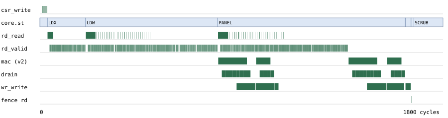

| Judul Ide Desain Chip | LMM-16: Secure, Low-Power Tiled INT16 Matrix Engine untuk Inferensi Typed-Decision Laya pada DE10-Nano |
|---|---|
| Nama Tim | [diisi tim] |
| Anggota Tim (2–4) | Ketua: [Nama] – [Institusi] – [Email/HP] · Anggota 1: […] · Anggota 2: […] |
| Dosen Pembimbing | [Nama Dosen & Gelar] – [Institusi] |
Label angka: [U] hasil ukur/simulasi di repo ini · [S] spesifikasi resmi · [E] estimasi · [A] asumsi. Semua skrip dan hasil mentah: fpga/ (RTL, testbench, fpga/results/*.json).
Masalah yang diangkat. Laya multilingual (321.908.995 parameter [U]) adalah model typed-decision: teks bebas + pilihan dinamis → probabilitas keputusan, tanpa API eksternal. Profiling CPU kami menunjukkan satu bentuk kernel, Y[L,2304] = X[L,768]·W[768,2304] (44 pemanggilan per inferensi: 22 attn.Wqkv + 22 mlp.Wi, bobot berbeda per layer), memakan 35–41% waktu operator [U]. Pada CPU edge kecil (Cortex-A9 800 MHz [S]) beban ini menjadi penghambat utama inferensi lokal.
Solusi yang ditawarkan. IP LMM-16: mesin GEMM ter-tile yang mengambil tile X/W dari DDR HPS, menghitung 128 MAC/siklus dengan DSP Cyclone V, dan menulis akumulator INT32 kembali ke DDR. Host tetap menjalankan tokenizer, operator lain, dan keputusan. Bobot tetap berupa data di DDR, bukan logika.
Implementasi pada DE10-Nano. Kontrol melalui lightweight HPS-to-FPGA (CSR 32-bit). Data melalui dua port FPGA-to-SDRAM 64-bit (baca X/W, tulis Y), dengan completion lewat IRQ f2h. Satu domain clock 100 MHz; CDC ditangani bridge hard HPS [S].
Kebaruan & keunggulan yang dapat dibuktikan (bukan klaim kecepatan sebelum uji board):
max(compute, transfer) dibuktikan lewat simulasi sweep bandwidth [U].Latar belakang. Brief proyek mengarahkan pada akselerator untuk kernel dominan, bukan memindahkan 322M parameter ke RTL. Bukti profiling (CPU M1, FP32, 4 thread, 12 pesan × panjang state 64/128/256/512; panjang gabungan L = 109/173/301/557 untuk skema uji):
| L | Kernel 768→2304, ms/inferensi [U] | % aten self-CPU [U] | aten::mm total [U] | Median e2e, 360 run acak [U] | MAC/pemanggilan |
|---|---|---|---|---|---|
| 109 | 29,4 | 41,3% | 59,6% | 66 ms | 192.872.448 |
| 173 | 35,5 | 40,5% | 58,5% | 88 ms | 306.118.656 |
| 301 | 55,1 | 38,7% | 55,7% | 136 ms | 532.611.072 |
| 557 | 95,0 | 35,2% | 50,6% | 256 ms | 985.595.904 |
Rumusan masalah & batasan.
Gap. Karya DE10-Nano terdekat (Gadea-Gironés dkk., 2024 [1]) memakai kernel OpenCL FP32 untuk CNN, mencapai 95–108 MHz pada utilisasi logic 90%. Penulisnya menyimpulkan HPS+NEON "hardly justif[ies] the use of the FPGA" kecuali FPGA membebaskan CPU, dan jalur DDR antar-kernel mendominasi. Belum ada GEMM transformer yang presisinya dipilih dari gate keputusan, aman terhadap DMA, dan bit-exact.
fpga/results/e2e_*.json].
| Kandidat | Error relatif tensor (median) | Keputusan sama | max|Δp| | Catatan |
|---|---|---|---|---|
| W8A8 per-kanal/per-token | 3,4e-2 | 10/12 | 0,223 | billing_512, other_512 terbalik |
| W8 + aktivasi FP32 | 7,8e-3 | 10/12 | 0,057 | error bobot INT8 sudah cukup membalik |
| BF16 (operand), akumulasi FP32 | 1,8e-3 | 11/12 | 0,0074 | margin baseline 0,012 sangat tipis |
| W12A12 / W14A14 | 2,1e-3 / 5,2e-4 | 12/12 | 0,0053 / 0,0014 | lolos tipis / aman |
| W16A16 + >>10 → INT32 (kontrak) | 1,3e-4 | 12/12 | 0,0005 | setara FP16 (1,6e-4); dipilih |
lmm_scrub menulis nol ke xbuf, wbuf, obuf, akumulator, dan register drain (6.144 siklus = 61 µs).qx = clip(rint(x/sx), ±32767) dengan sx per token; qw per kanal keluaran, dikuantisasi offline. acc = Σk qx·qw eksak dengan |acc| < K·230 ≤ 240, sehingga akumulator 42-bit tidak bisa overflow (validator menjaga K ≤ 768). Keluaran y32 = (acc + 29) >>> 10 (round-half-up, |y32| < 230) muat di INT32 tanpa saturasi. Host melakukan dequant: y = y32·210·sx·sw.
Mengapa 16-bit? DSP Cyclone V mengalikan 18×18 secara native (2 per blok, mode sum + akumulator 64-bit [S, 3, 4]). Jadi INT16 tidak menambah DSP dibanding INT8; biayanya hanya traffic W 2× dan BRAM 2×. Ini lebih murah daripada kehilangan keputusan.
Lima level yang dipisahkan:
lmm_ref.py.rtl_kernel.py. Kontraknya matmul(x,w) FP32→FP32, sama dengan verification_v1.py.| Data | Lokasi | Ukuran | Justifikasi |
|---|---|---|---|
| Bobot Wqkv/Wi 44 matriks | DDR, CMA milik driver; RO bagi FPGA | 155,7 MB | tidak muat on-chip; tidak di-mmap ke user (integritas) |
| X blok (TM=128 baris) | xbuf M10K, 4 bank (baris m → bank m mod 4) | 192 KB | dipakai ulang oleh 72 panel W (N/32); W dibaca ⌈L/128⌉ kali |
| W panel (TN=32 baris) ×2 | wbuf M10K, 8 bank, ping-pong | 96 KB | panel p dihitung saat p+1 dimuat; TN minimum yang masih overlap |
| Segmen Y | obuf M10K, ping-pong | 2 KB | compute tidak menunggu tulis |
| Akumulator, drain | register (DSP acc + FF) | 32×42 b + 32×32 b | di-scrub tiap request |
| Deskriptor | register CSR (bukan di DDR) | 15×32 b | dibekukan saat busy: tanpa TOCTOU |
Pemilihan tile. Traffic W per pemanggilan adalah ⌈L/TM⌉×3,54 MB. Untuk L=557 [D]:
| TM | xbuf | Traffic W | Kesimpulan |
|---|---|---|---|
| 64 | 96 M10K | 31,9 MB | traffic W terbesar |
| 128 | 192 M10K | 17,7 MB | dipilih: TM terbesar yang masih menyisakan margin |
| 256 | 384 M10K | 10,6 MB | tidak muat bersama wbuf (> 553) |
TN tidak mengubah traffic. Ia hanya menentukan ukuran wbuf dan syarat overlap: compute per panel 24.576 siklus harus ≥ muat panel 6.144 beat + tulis 2.048 beat. TN=32 memenuhi syarat dengan wbuf terkecil (96 M10K), sehingga daya statis/dinamis BRAM lebih rendah.
Packing M10K. Kebutuhan bit ideal: xbuf 1,57 Mbit = 154 blok, wbuf 0,79 Mbit = 77 blok. Mode 256×40 atau 512×20 untuk word 64-bit menjadi 192 + 96 + 2 = 290 blok (batas atas). Yosys memetakan 254 blok (46%) [E].
| Interface | Spesifikasi resmi [S] | Pilihan & alasan |
|---|---|---|
| LW HPS-to-FPGA | AXI 32-bit tetap, base 0xFF20_0000 (2 MB) | CSR Avalon 32-bit; latensi rendah, terisolasi dari data |
| FPGA-to-SDRAM (F2S) | AXI-3/Avalon-MM, ≤ 6 port, 32/64/128/256 bit per port; MPFE bersama | 2 port Avalon 64-bit. Kebutuhan rata-rata 297–359 MB/s [U] = 37–45% puncak port 64-bit @100 MHz. 128/256-bit hanya menambah ALM, routing, dan daya tanpa throughput (compute-bound). Pengukuran Cyclone V: F2S jauh lebih cepat dari F2H, dan seluruh transfer FPGA→HPS < 1.500 MB/s [2]; R+W serentak 20,08 Gbps [5]. |
| Reset/CDC | bridge HPS punya clock crossing asinkron; port F2S dilepas lewat fpgaportrst (0xFFC2_5080) saat SDRAM idle | satu clock 100 MHz; reset async-assert/sync-release; urutan: konfigurasi FPGA → bridge → fpgaportrst (U-Boot) → probe driver |
Register map (word offset): 0x00 ID · 0x01 CTRL (START, ABORT, IRQ_EN, CLR) · 0x02 STATUS {err_code, rejected, err, done, busy, state} · 0x03/0x04 REQ_ID/DONE_ID · 0x05–0x07 M, K, N · 0x08–0x0A alamat X, W, Y · 0x0B TIMEOUT · 0x0C–0x0E WIN_LO, WIN_HI, WIN_LOCK · 0x10–0x13 PERF (siklus, siklus MAC, beat baca, beat tulis).
Urutan request dan kepemilikan buffer:
ioctl(SUBMIT). Driver menulis CSR, REQ_ID, START. X, W, dan Y berpindah milik ke device.dma_sync_for_cpu(Y). Buffer kembali milik user.Threat model.
/dev/mem). Proteksi port di SDRAM controller dicatat sebagai lapis-3 opsional.| Ancaman | Ditegakkan driver | Ditegakkan RTL (diuji) |
|---|---|---|
| DMA di luar buffer | user hanya memberi slot | WIN terkunci; validator; guard per burst di rd/wr (kode 4, 9) |
| Overflow alamat/ukuran | hitung 64-bit | ujung region 34-bit; Y=0xFFFF_FFC0 ditolak |
| Dimensi ilegal | cek | 1≤M≤1024; 64≤K≤768, K%32=0; 32≤N≤2304, N%32=0; TIMEOUT>0 |
| Overlap berbahaya | slot terpisah | Y∩X = ∅ dan Y∩W = ∅ (kode 5) |
| Deskriptor berubah / request saat busy | mutex | argumen beku saat busy; START/tulis ditolak dan diberi flag |
| Hang, abort di tengah burst | timeout → ABORT → reset bridge | watchdog (7), ABORT (8): berhenti issue, terima sisa beat, burst tidak terpotong |
| Completion basi / residu data | cek DONE_ID | DONE_ID hanya saat sukses; scrub semua buffer; fault dibersihkan saat scrub |
issue; register dot/acc hanya aktif saat valid. Tidak ada gated clock di fabric.Metrik dibedakan: idle, dinamis (Quartus Power Analyzer + aktivitas simulasi), daya total board, dan energi per inferensi. Belum ada angka watt hasil ukur.
Referensi daya [1]: board DE10-Nano 3,72 W saat ARM-only dan 7,45 W dengan desain FPGA aktif. Jadi energi hanya menang bila latensi turun > ≈2×.
| Modul | Baris | Fungsi & invarian |
|---|---|---|
| lmm_top | 162 | CSR Avalon, validator fail-closed, WIN lock, watchdog, PERF, IRQ, reset sync |
| lmm_core | 274 | FSM IDLE→LDX→LDW→PANEL→FLUSH→FENCE→SCRUB (STOP saat abort); loader map; PE 4×8 dot4; drain; ping-pong |
| lmm_rd / lmm_wr | 52 / 80 | master burst Avalon; guard lapis-2; outstanding dibatasi 256 beat (counter tidak wrap); fence |
| lmm_ram | 17 | RAM dual-port, baca terdaftar dengan enable (inferensi M10K) |
Custom ISA tidak diperlukan: operasinya satu (GEMM) dengan layout tetap, sehingga register cukup dan permukaan serangan lebih kecil.
| Komponen | Estimasi (Yosys synth_intel_alm Cyclone V) [E] | Kapasitas 5CSEBA6 [S] | % |
|---|---|---|---|
| Logic (ALM) | 13,8k LUT ≈ 7–9k ALM | 41.910 ALM (110K LE) | 17–22 |
| Register | 4.674 FF | 166.036 | 2,8 |
| Block RAM (M10K) | 254 (batas atas 290) | 553 blok / 5.570 Kb | 46–52 |
| DSP | 128 mult. 18×18 array = 64 blok; +3 validator | 112 blok / 224 mult. | 57–60 |
| Clock target | 100 MHz [A] | DSP mode sum 250 MHz (−I7) [3] | – |
Catatan: template menulis register 415.000; Device Overview resmi menyebut 166.036 [S]. Angka Yosys bukan hasil fit Quartus. Fmax baru sah setelah timing closure. Karya HLS sebanding menutup timing pada 95–108 MHz walau logic-nya 90% terpakai [1].
Tools: Icarus Verilog 13 + GTKWave (unit/keamanan/waveform), Verilator 5.052 (replay besar, ≈200× Icarus), Python/NumPy/PyTorch (reference, gate), Yosys 0.69 (estimasi), Intel Quartus Prime Lite + Platform Designer + SignalTap (board; butuh host Linux/Windows x86).
| Uji | Isi | Hasil [U] |
|---|---|---|
Keamanan (+test=sec) | start tanpa lock, 8 argumen ilegal, misalign, luar window, wrap 4 GB, overlap X/W, tulis saat busy, DONE_ID, IRQ, watchdog, abort, guard lapis-2 (bound dirusak setelah validasi), pemulihan, scrub ×3 | 32/32 lolos di Icarus & Verilator; request ditolak = 0 beat bus; monitor 0 pelanggaran |
| Bentuk & stall acak | M∈{1,3,4,5,9,31,127,128,129,130}, K 64–256, N 32–96, magnitudo terburuk ±32767, stall 0/20/60%, latensi 1/8/30 | 10/10 bit-exact |
| Fixture Laya | 72 tensor nyata (12 kasus × layer 0/11/21 × Wqkv/Wi), L = 109–557 | 72/72 bit-exact; error vs FP32 ≤ 1,76e-4 (median 9,3e-5) |
| Inferensi penuh, RTL di loop | 44 modul × 12 kasus via rtl_kernel.matmul | 12/12 keputusan sama dengan baseline (termasuk 4 baseline yang salah); max|Δp| 0,0005; 528 pemanggilan RTL; 69,8–347,9 juta siklus/inferensi |

fpga/tb/lmm.gtkw) untuk GEMM M=9, K=64, N=64, stall 20%, latensi 8. Urutannya: START, LDX, LDW, lalu PANEL (prefetch panel 1 bertumpuk dengan MAC, drain, dan tulis Y), fence read, SCRUB.| L | Siklus total [U] | Siklus MAC [U] | Utilisasi | Baca + tulis DDR [U] | ms/call @100 MHz | BW rata-rata | 44 call: waktu / traffic |
|---|---|---|---|---|---|---|---|
| 109 | 1.586.114 | 1.548.288 | 97,6% | 3,71 + 1,00 MB | 15,9 | 297 MB/s | 0,70 s / 207 MB |
| 173 | 2.492.738 | 2.433.024 | 97,6% | 7,34 + 1,59 MB | 24,9 | 359 MB/s | 1,10 s / 393 MB |
| 301 | 4.297.754 | 4.202.496 | 97,8% | 11,08 + 2,77 MB | 43,0 | 322 MB/s | 1,89 s / 610 MB |
| 557 | 7.907.700 | 7.741.440 | 97,9% | 18,55 + 5,13 MB | 79,1 | 300 MB/s | 3,48 s / 1.042 MB |
Siklus MAC sama persis dengan rumus ⌈L/4⌉·(N/8)·(K/4), dan byte baca/tulis sama dengan X + ⌈L/128⌉·W + Y. Waktu dalam ms adalah siklus terukur dikali clock asumsi; ini bukan waktu FPGA terukur.
Sweep bandwidth DDR bersama (token bucket R+W, arbitrasi round-robin seperti MPFE) [U]. Overhead terhadap compute murni untuk L=109 / 557:
| Bandwidth efektif | L=109 | L=557 |
|---|---|---|
| 800 MB/s | 2,2% | 2,0% |
| 500 MB/s | 3,3% | 4,7% |
| 300 MB/s | 5,2% | 13,5% |
| 200 MB/s | 54% | 54% |
Pada 200 MB/s hasilnya 0,7% dari batas teoretis traffic/BW, jadi perilakunya mengikuti max(compute, transfer). Bila read diberi prioritas mutlak, overhead pada 800 MB/s naik ke 24%. Konsekuensinya, bobot port MPFE harus diatur di board (temuan desain).
Uji board DE10-Nano (rencana):
f2h_irq0.fpgaportrst di U-Boot, lalu laya_mm.ko.| Metrik keberhasilan | Target |
|---|---|
| Integer | 0 mismatch di simulasi dan board |
| Keputusan | 12/12 sama dengan baseline; max|Δp| ≤ 0,01 |
| Keamanan | 100% test negatif ditolak tanpa transaksi bus |
| Throughput | ≥ 90% dari 128 MAC × fclk pada L=557 |
| Timing | slack positif di semua corner |
| Energi | J/inferensi kernel < HPS-only (diukur, bukan diasumsikan) |
Estimasi pembanding (belum diukur). GEMM INT16 HPS-only dengan asumsi 0,5–3 GMAC/s [A] butuh 14–87 s untuk 44 call pada L=557, sedangkan LMM-16 butuh 3,48 s. Dengan daya board dari [1], energi diperkirakan ≈26 J vs 54–323 J, jadi keunggulan ≈2–12× [E] hanya di level kernel.
drivers/fpga/altera-fpga2sdram.c (FPGAPORTRST).profiling_v2/, verification_v1_results/, fpga/results/.| Nama | Keahlian | Peran |
|---|---|---|
| [Ketua] | […] | RTL & integrasi Platform Designer |
| [Anggota 1] | […] | driver Linux, HPS baseline |
| [Anggota 2] | […] | verifikasi, daya, laporan |
fpga/rtl (585 baris), fpga/tb, fpga/sw (reference, gate, harness), dan hasil JSON. .sof/.rbf dibuat saat bootcamp.| Hari | Fokus | Target |
|---|---|---|
| 1 | Quartus fit/timing, HPS + F2S, fpgaportrst, driver | GEMM kecil bit-exact di board |
| 2 | Replay 72 fixture, HPS-only C/NEON, SignalTap | tabel siklus/latensi/BW terukur |
| 3 | Daya & energi, test negatif di board, demo | laporan teknis, video |
fpgaportrst. Mitigasi: jalur cadangan F2H, dengan kontrak RTL tetap.